《双人成行》完整剧情总结（含结局）
科迪和小梅想恢复人形，哈金想让他们修复婚姻，萝丝想让爸爸妈妈重新做朋友。这三件事起初看上去指向同一个结局。直到父母读完信，才发现孩子已经把整个家庭的责任揽在自己身上。
把主线收成五步，就是父母宣布离婚，萝丝希望他们重新做朋友，眼泪却让两人在玩偶身体里醒来；两人想再借一次眼泪变回去；这个办法伤了女儿，也失败了；为了读全她的信，两人经过钟、雪景球、花园和阁楼，重新认识对方；等他们终于能回家，最急的事已经变成赶到车站，让萝丝当面听见一句她早该听见的话。她没有做错什么。
1 · 序章与棚屋
晚饭之前，两人先为一件小事争执：谁该带萝丝看牙。小梅第二天还要加班，科迪认为女儿也需要妈妈在家。桌上两人宣布分开，萝丝只是问能不能回房。关上门，她才让两只亲手做的玩偶替爸爸妈妈说出她想听的话，拿出一本婚姻辅导书许愿，眼泪落在玩偶上。
醒来的科迪是黏土人，小梅是木偶。会说话的书哈金自认受萝丝所托，要修好这段关系。两人只想赶快找到她。吸尘器记得谁用坏了它、谁答应修却把它收起来；生锈的锤子和钉子则要他们先搭救工具伙伴。到了窗边，望远镜告诉两人自己看到了什么。科迪由此推断，再让萝丝的眼泪落在他们身上就能解除魔法，小梅答应一试。玩家从这里开始追的目标，是角色提出的假设。
看牙与加班 · 第 1 集 00:22 · 窗边的目击者 · 第 1 集 19:00
棚屋的实际操作也给出了动作的先后顺序。追保险丝时，科迪从地板跳上矮纸箱。约二十秒后，两个人在两堵相对的木壁间蹬跳，先上去的玩家能站着看见另一个人的最后一跳。到了吸尘器管道，一人守住能转向的管口，把同伴送到高处；先到的人随后按下红钮。另一段里，小梅在风口失足，从碎散到重新起跳约 2.4 秒，科迪仍站在原开关旁。这一次重试的时间取自录像里的这次失误。
实机操作核对采用 Ziland-qwq 与 tttciny 合作录制的棚屋上集。07:35 矮箱起跳 · 07:55 对壁连跳 · 09:20 组合跳越过断口 · 14:53 软管和高台 · 20:13 同伴守着开关。
2 · 大树
两人想借树绕到萝丝的窗户，却被松鼠当作间谍。松鼠开出条件，要他们对付黄蜂和失控的机械蜂后。科迪喷树液，小梅将其引爆。击破外壳后，两人面对的是一只害怕失去身份的熊蜂。他们放过她，也因此失去了松鼠的庇护，只能抢飞机逃走。
这场支线给了后来的一幕一个尖锐的参照：他们此时完全有能力违抗一次看似方便的伤害。另一边，萝丝对着没有反应的父亲谈原谅，又拿着太空玩具去找母亲。父母看见的是孩子无法回应他们；孩子看见的恰好相反。
萝丝与父亲 · 第 2 集 01:05 · 机械蜂后之后 · 第 2 集 16:50 · 萝丝去找母亲 · 第 2 集 23:35
3 · 萝丝的房间
月亮狒狒一直监测萝丝的快乐与忧虑，知道来人想让她哭。科迪和小梅在监视屏前短暂承认最近争吵很多，又怀疑玩具的判断。打完太空战，两人答应保护萝丝才获准回去。到了书桌，他们发现女儿听不见、摸不到他们，但他们能移动她的东西。
两人把这个发现用在了最糟的地方。他们穿过玩具城，找到萝丝最喜欢的小象库缇，亲手把它拖到边缘。萝丝抱着受损的小象哭泣，两人接到眼泪，仍然是玩偶。女儿的信出现了，他们读到开头便又以为找到了破解方法；哈金把信撕成四片。父母在同一个房间，看得到萝丝抱着玩具哭，却听不见她没有说出口的那句担心。玩家带着这次判断失误去追四张信纸，起先仍想解除魔法，直到结尾才能读懂她离开的理由。
监视屏 · 第 3 集 03:36 · 承诺与书桌 · 第 3 集 07:22 · 玩具象 · 第 4 集 20:07 · 信与四张碎片 · 第 4 集 22:52
4 · 布谷鸟钟
小梅认为她不能同一时间出现在公司和家里，科迪在她眼里又总是没有时间观念。哈金索性让小梅留下分身，让科迪控制部分物件的时间。钟里有两个沿分开轨道前进的木人，二人要跟上它们，使轨道重新相接。
小梅说失去工作会危及一家人的生活，科迪说家人也正在失去她。钟塔里，科迪让碎片回到合适的位置，小梅才有路通往钟心。现实里的钟重新报时，萝丝想到的是妈妈喜欢准时。一次通关在孩子那条故事线上成了她还惦记妈妈的证据。
争执变成能力 · 第 4 集 24:50 · 钟心 · 第 5 集 11:10 · 现实中的报时 · 第 5 集 13:17
5 · 雪景球
两人认出第一次滑雪旅行的旧地，穿回冰鞋、敲钟唤醒小镇，恢复水下糖果工厂。哈金问他们何时感谢过对方顾家和加班。磁力让两人起初牵动物件，后来能在风雪里把对方拉向自己。
关系真正松动的一刻发生在缆车上。两人聊起有孩子以后攒下的账单，甚至认真想象离婚后分别带萝丝去水上乐园。到了求婚的地方，科迪还记得自己忘词出丑，小梅记得的却是他明明害怕也肯开口。两人终于有时间把同一段回忆讲出两个版本。
冰封的小镇 · 第 6 集 02:08 · 缆车 · 第 6 集 12:50 · 求婚地点 · 第 6 集 17:45
6 · 花园
科迪回到自己放弃的温室，发现紫色侵染已经蔓延到最早种下的花 Joy。他替它取这个名字，是希望家里一直有喜悦。两人借植物、蜘蛛和青蛙穿过园子，一起救回它。
小梅承认自己没有理解园艺对科迪的意义。Joy 也把选择交还给科迪：伴侣能鼓励他，重新照料花园要由他自己决定。镜头随后切回萝丝。窗台上开了花，她想到爸爸看见该有多高兴。对女儿来说，爸妈喜欢的东西仍然值得她费心。
第一株花 · 第 7 集 00:32 · Joy 的回话 · 第 7 集 14:38 · 窗外的萝丝 · 第 7 集 15:45
7 · 阁楼、来信与车站
这回轮到小梅。她把旧唱机和唱歌的愿望都收进了阁楼。两人找音响、灯光、话筒、乐团与观众。准备齐全以后，小梅依然怕唱得不完美。科迪留给她自己走到话筒前的时间。台下的他抬头望着她；与此同时，在现实里，萝丝给妈妈留下喜欢的歌，准备独自离开。
演出后两人相拥亲吻，醒回各自的身体。完整的信把之前读过的开头改写了：萝丝以为自己不肯刷牙、睡后看书、没有收好玩具，才害父母分开；她拿了零用钱买车票，想把家留给两人重新当朋友。夫妻赶到车站，告诉她争吵是大人的责任，无论今后怎样都爱她。哈金先前自称是畅销书，最后萝丝却说自己是在学校的垃圾桶里捡到它的。离开车站时，一家人还能开个玩笑。故事把最明确的承诺留给了孩子。
登台前 · 第 8 集 15:48 · 女儿与唱片 · 第 8 集 18:40 · 完整的信 · 第 8 集 24:05 · 车站 · 第 8 集 25:31
分屏里的两个人各自知道什么
布谷鸟钟里，科迪把破碎的物件倒回完整，小梅从他仍在维持的路面上跑过去。从科迪的画面可以判断哪一段路已经接好，转看小梅的画面才知道她有没有站稳。到了雪景球，两人的磁力可以直接作用在彼此身上。此前被要求拿工具配合的人，这一次成了同伴自己可以抓住的东西。两关对应了两句不同的请求：「再等我一下」和「过来，我接着你」。这是我从这些段落读出的关系变化。钟塔终段 · 导演的合作玩法解说
因此《潮汐回声》把第一次信任留给了一个可能发生、也可能完全跳过的小插曲。若沈遥一跃踩稳，林澈只听她说「到了」。若她踏空，林澈先看见绳子吃紧；她低头看见浪，再抬头看横梁。同一个跳跃，多出一段只有这一对玩家才经历过的接应。到了第十一关，站在轮坑上面的人换成沈遥。她可以把踏板盘到林澈脸前，却得等下面的人说脚踩实了才能接着转。等故事走到结尾，岸上的两个人都会知道，轮到自己等船上回话了。
萝丝在父母看不见的时候做了什么
我回看了花园和阁楼之间两次切回现实的镜头。父母刚救回 Joy，萝丝在窗边发现一朵花，伸手去看，想到爸爸会有多高兴。等小梅走向舞台，萝丝把妈妈喜欢的唱片留下；观众已经知道她在道别，台上的两个人还不知道。等父母在家中读完信，观众也终于明白她为什么会独自去车站。孩子自己观察、尝试、作决定，父母比观众更晚才弄明白她想做什么。窗边的花 · 第 7 集 15:45 · 留下唱片 · 第 8 集 18:40
这给了海雁号自己的故事线。第二关，阿棠在后甲板看见一盏梁青看不见的绿灯；第八关，他第一次插进正式通话；第九关，玩家站到他的位置辨桩。最后一次切到船尾时，玩家已经知道他为什么有资格让船长再等一等。岸上和驾驶台可以把各自的事都做对，却都无法替他说那句「船尾进背风水了」。
从原作到《潮汐回声》的三个取舍
让玩家亲手把事情办砸。科迪的眼泪假说给前半程提供了一个可信的目标。库缇受伤以后，玩家和父母一起看到萝丝哭，等了一会儿，镜头里的两具身体依旧是玩偶。新作的第三关也保留这段等待。左屏亲手合上电闸，右屏亲口确认灯已亮；船首开始转向。右屏临时交给船长，玩家会发现从船上看，岸上刚合闸的灯恰好压在旧浮标上方。两次动作合在一起，组成了他们原先没有打算给出的引导。第四关去找原始记录的动机就有了。
给两个人一段有空说闲话的路。雪景球里的缆车让科迪和小梅坐下来，先谈养家的钱，再谈求婚时各自记住的糗事。那段谈话之所以自然，是因为此时谁都不用瞄准下一个落脚点。于是第七关把断桥险段放在前，背风的吊篮放在后。两人可以自己敲一段节奏、让同伴猜，也可以把铁盒盖上。错过这段私人的玩笑，船仍然等得到他们。
给远处的人留下最后一件事。原作一次次切回萝丝：她给妈妈留唱片、替父母找解决办法，最后决定自己去车站。等父母恢复人形，孩子已经做了决定，他们得追出去回应她。在新作里，梁青把第二部电台交给阿棠去船尾看浪。这个选择在第十二关回来：岸上的人已经对准灯，唯有阿棠能确定断桩何时露出。右屏玩家最后松开岸台的发话键，从阿棠的舱门走到艉栏，自己决定此时能向船长报告什么。
还有一些地方允许两人停下正事，比一场输赢。导演在玩法解说中特别提到这种友好竞争。对北岬的两个人，这给了我们一个写童年的办法。玩家先认识如今说话小心的两个值班员，再亲手替小时候的他们抢一个毫不值钱的汽水瓶盖。谁输了、谁想再赛一次，这段往事才算由这两位玩家共同写过。Josef Fares 的合作玩法解说
主资料为全球球变冷的八集剧情剪辑，涵盖游戏七章，萝丝的房间拆成太空与城堡两集。各集均从片首倍速播放至片尾，合计 2 小时 52 分 04 秒；按剧情顺序复核全片画面序列与整轨对白的自动转写，关键台词另作回看。时标均为分集内时间。作者剪去了部分操作过程。人物职业与设定参照 Hazelight 作品介绍。
《潮汐回声》原创故事文案
北岬灯塔停役当晚，一艘载着四十一人的渡轮失去主机。岸上只有两个回来签交接单的老朋友。十三年前，他们的父母也当过这一班。当时灯亮了，船却搁浅了。
四幕十二关的任务线（含结局）
- 黑礁登陆、失电码头、双路回电。岸上先听见海雁号，再修回发射机。两人按照自己签过的交接单试光。灯亮了，梁青把它当作可以进港的许可；她一转舵，船首就偏向碎浪。两人急忙遮灯。
- 灯下暗室、十三年前、被划掉的坐标。要找到船还能走的方向，两人排水抢救档案，借童年录音练习分辨相邻的两声，再分轨重听事故原带。柜里的原图载有「北线待测」。六天前，林澈看见复印件少了备注，沈遥替两人确认过。梁青收到更正，要求岸上重新测量。
- 断桥上方、未寄出的报告、潮位校验。两人带潮尺过桥，找回旧记录里一个被挤在纸边的名字，再分别署名更正。岸上要读准潮尺，船尾的阿棠要在浪间看清断桩。两边的观察合起来，才够判断今晚哪条水道尚可通过。
- 裂纹透镜、无光的三秒、航道重现。透镜扫过裂口就会失光，岸上用雾号补足这几秒。梁青等船尾亲口报位才用掉最后一次应急推进。天亮后的值班记录留了空位，给当年就在船上的顾岚补进自己的原话。
开场 · 半句回话
离防波堤还有一段水。沈遥坐在艇尾的舵轮前，往右侧身避开一串溅上来的浪。舵座旁的铜牌积了盐。沈遥用手套擦过一道直痕，又顺着旁边的弯钩往下走，露出一个「2」。她朝艇首喊：「外港值班……十二。林澈，试十二。」艇首电台的指针越过杂音，一个女人开始数人头。
梁青：「北岬，这里海雁。船上四十一位，算上我。」
林澈低头对着扬声器：「听见了。」
沈遥隔着半条船喊：「你没按发话键。她不知道。」
这一次林澈把侧键按到了底。一句话说完，绿色接收灯还在亮，旁边的发射灯始终是黑的。海雁号过了几秒，又在喊北岬。沈遥收油门，红白相间的首缆牌从细雨里移到他们身旁。要让梁青听到一句回话，两人得先上岸。
十三年前两人也是这样坐在值班台边。林澈的父亲负责灯机，沈遥的母亲负责测潮。那晚一艘邮运船搁浅，调查简报上只剩两个挨在一起的签名。两家从此不再同桌吃饭。小时候他们合录过一盒《十秒钟北岬》：一个人去收一段怪响，另一个人对着空轨猜是什么。最后一题空了十三年。六天前，两人以机修员和信号员的身份回来交接这座塔，客客气气，见面只谈自己负责的那一栏。今晚一个来拆灯机，一个来封存电台。偏偏在灯塔停役的最后一夜，渡轮海雁号主机停车，救援艇赶不到它漂进礁区之前。
岸上与船上的人
林澈要在设备交接单上拿到一个干净的签名。他记得父亲晚年连修个台灯都要人签收，厌烦这种习惯，却也总把「机器转了」当作工作的终点。玩家先用他的手把灯点亮，后来还会用这双手把灯遮住。
沈遥会从风声里辨出一句被截断的回话。她替母亲整理遗物时，只把能听清的一面数字化，另一轨上留着十五秒空白。她怕自己一旦说「没听清」，就会像母亲一样再也没人肯听。
梁青，海雁号船长。有一台只够短时启动一次的应急推进器。她最初把北岬当作引航权威；错灯亮起以后，她给两人定下一条约定，每一条有关船的位置或动作的消息，都由驾驶台复述。她把手持台交给年轻水手阿棠，派他到船的另一面看海。她要决定什么时候用掉应急推进；阿棠知道，如果驾驶台判断有误，他也可以打断船长。
顾岚，当年邮运船上的水手。上岸填笔录时，桌上只备了两把椅子，一把给值班员，一把给船长。她站在门边，借了支铅笔，在纸角留了个名字。第七关，玩家翻起纸夹时，还能看出那支铅笔写到一半钝了。
中场 · 同一页纸
第 6 关，玩家从两侧把纸推上透光台。一层是维修验收联，另一层是航测草图。它们曾被一枚订书钉穿在一起。孔对孔时，父亲签的「回转正常」落在草图的空海面上；右下角的「实测未毕」恰好被裁出了复印范围。
林澈：「这是我爸的字。」
沈遥：「还有我妈的。你看她把浪花画到哪儿了。」
旧报告的附件注明了灯机可用、北线待测。六天前，林澈照着灯机做过一次验收；沈遥导出交接表时，纸上只印出了第一栏。林澈盯住签名旁一个浅浅的指甲印。那天他看见备注没印出来，用指甲在空白处划了一下，终究没有让同事重打一张。玩家照出「须以当潮复测」的最后一个字，两人隔着桌子把手停在当年那一道笔槽的两边。林澈先开口。
林澈：「我指的是漏掉的那行。你那天看见了吗？」
沈遥：「我看见你的手了。我以为你叫我签字。」
沈遥把掠射灯留在亮处。林澈在设备联上只填自己验过的项目；她照着纸边的原话，另写一份航测结论。两个人都签好名，沈遥才按下发话键。
沈遥：「海雁，灯机验过了。北线能不能走，我们还不知道。」
第一幕 · 风暴登陆
岸外只有一艘船，岸上却有两种「可以」。玩家学会互相报数，也第一次发现报错了对象。
01 黑礁登陆
左屏看得清旋钮的每个刻度，工作频道刻在右屏舵轮旁。沈遥探身用手套擦过铜牌，盐霜只在手指经过的地方退去。她可以先擦出一位数，抬头看看离堤还有多远，再低头读第二位。她报数时艇仍可进车；林澈也可以先请她放慢，听完那句「算上我」。发话键弹得很快。话没说完便松手，林澈可以重新回答。等他说完才会发现，还有另一盏灯该亮却没亮。
进港电台 · 约 23 秒连续实机。左屏调台、按键回话；右屏一边进车一边擦读舵牌。下载电台片段
林澈走到艇首时，红白牌还在往他的肩后退。沈遥从舵位看得清整条堤边，先松了油门。艇凭余速往前滑。林澈把缆眼往身后一带，松手时绳圈带着船速飞过两只羊角。早一点松，圈会落在水面；方向稍偏，它就擦着一只角翻下去。他得一把把收回余缆，沈遥得替他把船留在还能再抛一次的位置。首缆套牢后，沈遥停机，绕过舵座走到艇尾。堤边垂着一只裹绿线的旧绳眼，艇上的木杆够得到它。林澈拉住首缆时，沈遥从船尾向前送钩，随浪调整左右位置。沈遥可以先从肩后看杆和艇的距离，再近看钩口。钩尖擦过堤面，她可以立刻收杆再来。一旦勾住，林澈得把刚刚收紧的首缆松出去。两人若同时后拉，艇首受力，艇尾反而摆开，绿绳眼始终差半程。等船身回正，沈遥把湿绳眼带过栏边，举到尾桩上方才放手。然后轮到林澈收齐首缆。靠球贴住堤面，两人沿走道擦身而过。停机、勾住和落桩各有检查点。
第一根首缆 · 14 秒连续实机。沈遥减油，林澈第一把落在水里。他拉回湿绳，又抛了一把。两只羊角都穿过绳圈，沈遥才停机。下载投缆片段
艇尾接缆。左屏用键盘收首缆；右屏用手柄扫钩，近看绿绳眼后将它挑起。两人一起后拉，船尾摆开，杆停在舷边。左屏松缆后，右屏才把绳眼放上尾桩。下载实机片段
交通艇的靠球撞了一下堤脚。原先挂登岸梯的两个螺栓还在，梯子半截没在浪里。沈遥跳到矮踏板上，指了指两块护舷。左边橡胶上的黑鞋印很低，是他们还小的时候留下的。右边那块已经滑到了水线。下面的手绞轮能把它沿斜轨拉近，上面还挂着一架卷梯。
林澈：「这块黑印，是你小时候蹬的？」
沈遥：「你以为是你自己的？」
两个人先各跳一次。林澈上绞轮台，沈遥从窄踏板进井底。他边听她报位置边收绳，她朝固定护舷起跳，蹬到升起的滑靴。若她在胶面上多压一拍，朝岸侧那截平石蹬出，就能一脚踏上堤。短蹬时，两只湿手套先扣住堤边。手掌上方有半圆的包铁，她推了一下，膝盖上不去。林澈还守在墙背面的绞轮边：「我在下面。你那边够得着吗？」沈遥答：「够着了。让我挪一下。」她一手承重，另一只手往岸里摸。摸到那段磨白的石面，才压掌、送膝，等靴跟落稳。两条路最后都把她送到卷梯旁。她回身放梯。「听，棘轮的声音，还跟以前一样。」林澈攀到堤上才问：「小时候也是你放的梯子？」沈遥说：「那回你也没往上看。」堤上吊篮通往值班间；便携电台只能听见船，回话仍要靠站里的发射回路。
- 林澈 · 左屏
- 上堤后先在低位吊篮试一次。林澈报出绞盘铭牌上磨损的记号，沈遥从三块反光牌里用头灯找到对应的横梁。横渡浪沟时，篮子会被侧风吹低。林澈要听沈遥报脚底和梁面的高差，收绳把她送到能起跳的位置。
- 沈遥 · 右屏
- 沈遥看准摆幅，往落脚梁上跳。踏空时腰索会钩住梁外的吊环。林澈把绳子收短，沈遥荡向梁内，在双脚够得到梁面时脱钩。到了对岸，她分两截放下折梯，等看见林澈到了中间铆板再放第二截。最后一趟由她拉篮。
- 合流与检查点
- 护舷井底和绞轮台是各自的失足重试点。沈遥登顶、卷梯放到底、两人走下石阶抵达吊篮码头，各记一次进度。到防潮门，林澈一把把收链，沈遥从升起的铁门下穿过去。只有她看得到内侧的销孔；等孔对齐，把销钉打进去，林澈才可以松手。值班间的发射灯是黑的。林澈接上扬声器，沈遥旋转天线，在潮声里抓住梁青反复呼叫北岬的一句话。渡轮留着最后一次应急推进。两人的声音还过不了海，第二关要找的是码头发射回路。门销和扬声器插头分别存档。
黑礁登陆，双人连续实机。沈遥第一次试翻时被铁盖挡住。林澈从绞轮这边只看到堤沿上的手，听见她应了一声，过了一会才看见她翻上去。接下来要靠她放下梯子，林澈才能上岸。下载本段
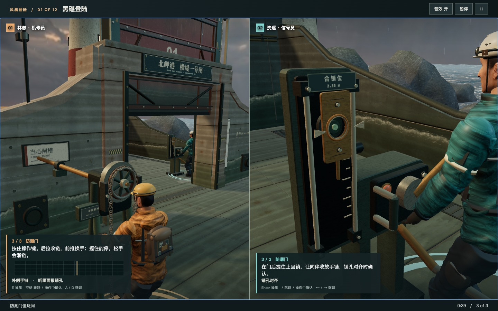
第一关实机画面。林澈在闸外握住手链。沈遥看见移动铜尺和固定销座的孔重合，才把手里的销子推到底。
梁青：「我攒着那一下。等你们能看清我。」
02 失电码头
海雁号又在呼叫。梁青听船尾的人说看见了绿标，她站在驾驶台却看不见。沈遥带上检流笔，走上吊车旁的干廊。底下的林澈从试灯键旁抠出一块铜牌，指甲顺着上面一道短痕、一道长痕滑过去。
- 林澈 · 左屏
- 在干线试灯键上轻点一下，再压住半秒松开。东廊的三只插口各自开始回闪。和沈遥找到回线后，林澈下到浅水作业台，提起接头，把垂进浪里的电缆扣上两只瓷鞍。第二只鞍在一段被浪冲断的作业台对面。林澈带着接头跳上链渡浮台，把铜头扣进瓷夹，腾出两手拉链。他往后一扳，链轮咬住一齿；向前送回把手时，止回爪替他留住这一把。浮台抵住对岸靠木后，他还得取回接头，自己跳上石台。最后一只接头上能摸到一枚缺月。
- 沈遥 · 右屏
- 把检流笔逐个压在插口上，记住哪一路回了「短、长」。林澈开始提线后，站到上廊卷筒旁，后拉放线、前推收线。轮上能读到放出了几米，她一抬头也能沿着黑色电缆看见下面那条小船。放少了，林澈手里的拉柄停住；放得太急，线腹被浪打落，回缆把浮台牵回第一道鞍。等同伴到了吊臂检修灯边，绕到钢架背后，让他照透三扇磨花的小窗。圆环、三道栅、缺月里，哪一道和线头相合？
- 合流与检查点
- 接上缺月那一头，两人把开场的工作换过来做一遍。沈遥在背窗发回「短、长」，林澈到岸闸压住检流片，亲眼看见两拍，才合闸送电。岸上第一次有了发话的电。沈遥请船长把手台交给目击者。玩家说完松键，能听见船上传来一声布料摩擦，接着是离话筒更近的年轻人。阿棠报出绿标在白浪后面；梁青随后请他们点亮岸标。这句话把两人送进第三关。已经挂好的瓷鞍、接通的背窗、验过的回码和岸台电源分别存档。
林澈：「她看见绿标了？」
沈遥：「是船尾的人看见了。她在驾驶台看不见。」
第二关连续实机。左屏每拉一次把手，浮台前进一段；右屏要随着这段距离放线。把手送回时，链条仍承着船，接头还卡在瓷夹里。
 第二关实机画面。林澈把灯停住以后，沈遥才能从背面看清线头上那枚缺月的另一半。
第二关实机画面。林澈把灯停住以后，沈遥才能从背面看清线头上那枚缺月的另一半。
梁青：「阿棠，你来说。」
阿棠：「我在后甲板。旧绿标在一道白浪后面。」
03 双路回电
配电柜写着「引导标／北线」。林澈能让灯亮；沈遥手上的交接图还盖着验收章。两个人都有理由以为可以启用。
- 林澈 · 左屏
- 林澈把起动柄拉到底，推回去时能听见棘爪落进下一齿。对面台上的黑针进了绿弧，沈遥把红针对上它，解开离合柄。她往里送，另一只原本不动的轮盘开始转。林澈手里的柄忽然沉了。「等我再摇一程。」沈遥让柄停在半程，看两道漆记先后从窗下走过。朝里推得太快，压盘就弹回来，从动轮仍会滑转。林澈补摇，轮速相合，她才把柄送到底。轴套落座，黄灯亮了。沈遥抬眼看向灯：「外面先别合闸。」岸外还只有旧浮标随浪升降。他上到廊道，翻开窗边的灯标簿。第一页绘着两根直柱。沈遥从观测镜里找到绿灯，镜头下移，终于看清四脚铁塔梯旁被海水咬去半边的漆。她报「零七」。林澈翻过铁丝环上的厚卡，手指停在同一座四脚塔的立面图上，拿铅笔打了个钩。卡片下缘印着「水深另见测潮簿」。他抬头等沈遥找到驾驶台，才走去合上工作回路。新岸灯亮了，白浪上多出第二道绿影。听见船长复述后，他跨到廊道边，把试光柄向后拉。细索牵起一块扇片，盖住灯面一瞬便弹回去。灯头上的长链仍悬在检修梯另一端。
- 沈遥 · 右屏
- 沈遥一直按着发话键说完「北线已恢复」。话筒还在手里时，频道里只有自己的底噪。松手，梁青的声音才进来：「北线可以进入，收到。」驾驶台的窗侧过来。右屏换到梁青，海面将旧绿标托起，岸灯几乎正压在它上方。玩家能先试着跟住下方的灯，向林澈要一次试光。它一直亮着。换到另一盏，守到它暗下去又亮回来，才由梁青亲口报位：「上面那盏是你们的。我刚才把两盏灯当成进港线了。」船已经在转。
- 合流与检查点
- 镜头回到留守岸台的沈遥。方才用于辨灯的薄扇片留不在灯前，她必须从话筒旁跑去收链抬梯。林澈走到梯尖，跨过海水跳上灯座，插牢止回销。她这才有空返回电台。林澈拉下遮光闸，沈遥亲眼看见岸灯熄灭，呼叫渡轮停止转向，再次松手听完复述。插销和落闸各自保存。船头稳住了，船身仍在内流，下一关得找另一条进港的路。
飞轮试车，约 15 秒连续实机。沈遥第一次送柄过急，压盘弹回。第二次她把柄停住，林澈补摇一程，等轮速跟齐再接合。离合锁定、黄灯亮起时会保存检查点。下载片段
第三关，约 20 秒连续实机。沈遥报出「零七」时，林澈的簿子还停在 04。他翻过头到了 11，得往回翻。听见笔尖划过纸面，她才转动镜筒去找海雁号。下载片段
第三关连续实机。松开话筒后，右屏移到驾驶台。看岸上拉柄的那一刻，两盏绿灯只有一盏会暗下去。下载片段
梁青：「绿灯灭了。舵回中。我们已经进了内流。」
第二幕 · 沉没档案
从已知的一盏错灯，追到十三年前被装订在一起的两份判断。两人学会把尚未知道的事说出口。
04 灯下暗室
林澈认出吸水篦子下面那一圈蓝边。他小的时候，塔里谁都可以用这只杯子，连做功课的圆规都是公用的。沈遥把钩尖探进水里，杯把转了半周又给吸回去。她说：「停一下。篦子上那只杯子……我认得那个缺口。」
- 解堵 · 两个名字
- 西台的林澈压住泄压阀，听着泵机转轻。东台的沈遥用长杆追住水面上打转的杯把，钩住后两人都得稳住。沈遥把杯子侧过来，转到能读清两个名字的角度。林澈怪她用圆规刻歪了，沈遥记得很清楚：「你的名字是你自己刻的。」杯子挂回东台，泵才抽得动水。
- 越窗 · 一个浮架、两种净空
- 林澈排水，沈遥从浮架靠岸的横梁跳上去扣紧导索。压梁下的旧铜槽偏左，她得摆绳对正架头的铜针，并请林澈把水位降到能容一个人的高度。压梁过去，北窗的槽口却在右侧，还高出一截。她要换边拉索，报出窗沿与脚底的高差，请同伴反向注水。浮架扣上窗沿，人才能离开绳鼓走上高廊。
- 退水 · 从两个楼层取带
- 沈遥到高窗尽头开启通往检修井的旁通管。楼下的林澈每走下一级，要先等水退过靴面。他读井壁的刻线，请楼上把阀轮守在指定开度，依次给两级旋塞放气。柜盖从水下露出来，林澈掀开盖，将值班带和旧游戏带装在一起的盒子送到吊筐。一人在下面稳导绳，另一人用收绳盘把盒子拉上来。
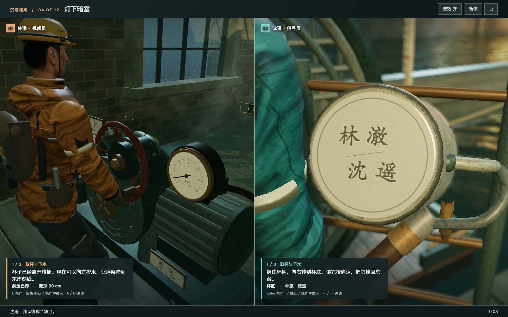
一个人听着泵压降下来，另一个人翻到杯底，看清两个刻歪的名字。
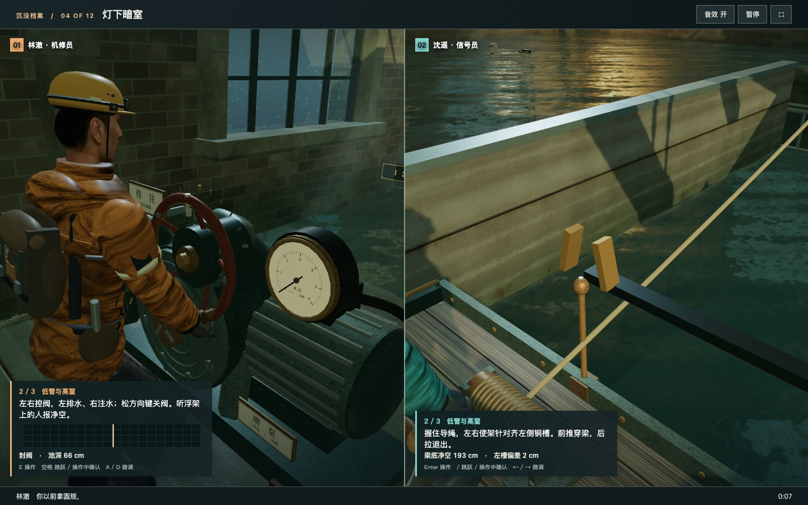
导轮经过压梁以后，沈遥才能请林澈注水，把她升到北窗。
林澈：「这盘没拆过。封条上有两种笔迹，我爸只写了日期。」
沈遥：「那就两边都听。盒子给我，你的手先腾出来。」
05 十三年前
老录音机可以分别监听灯机房和电台。林澈先放错一盒，小女孩的声音让他猜一种哐啷声。他竟还记得答案。沈遥伸手想停，听见自己在带子里笑，便等那一声笑完才换带。传动带一松，值班录音的两轨便会错开。
先回到停航事故前的一个夏日。窗开着，八月的海光从百叶间照到画板上。小林澈用拇指按住一颗螺丝，沈遥捧着只掉了漆的饼干盒，叮嘱他：「你放手的时候叫我。」左屏看得清图钉和画板的坡度；右屏从桌侧能看见，螺丝飞出板沿后，离盒口其实还有一小段。跌上木桌只闷闷响一声。等它真的落进铁盒，两人把画板和盒子递过去，再由另一个人放第二颗。
他们把两次接住的声音留在带上。磕着哪颗图钉、什么时候越过板沿、在盒底滚了多久，都取决于这一对玩家刚才的手势。松手听完，日光退回开盘机的金属反光。沈遥把工作带上的这两声拷进随身采音机，接着拿起当年的值班卷。她已经亲耳辨出，听起来挨在一起的两声可以来自两件不同的东西。
- 林澈 · 左屏
- 两台开盘机上还绕着一盘他们小时候用过的工作带。林澈慢放，用手轮找铁盒落桌和螺丝滚动的起音，给沈遥留记号。换到值班带后，单次吸合、两声回弹、马达连续回转留下三种截然不同的痕迹。一个记号可以先压住，等对面慢慢倒带。
- 沈遥 · 右屏
- 沈遥从另一只架子带回电台卷和记录卡，调监听头，从底噪里分辨出「触点已合」和「灯机回转正常」。两盘带子的计数轮各走各的，不能照抄对面的秒数。翻到测潮员那一面，改由沈遥先听人声压针，让林澈去配同一刻的开麦、敲尺和门闩声。音轨、原声字幕与波形来自同一组录音。
- 合流与检查点
- 最后两个人一起松开压带杆，让那十五秒从头走完。测潮员报水位、要求复测，最后说「原图，丙三柜」。林澈到钥匙板前找铜牌，沈遥守在机器旁，可随时重新放她说柜号的那一句。提错的钥匙挂回原位，已配好的录音不用重做。丙三钥匙登记在案，下一关才有了推开草图柜的理由。电台里阿棠补充，他从船尾看见旧标和白浪叠在一起。
第五关连续实机。第一次螺丝落在木桌上。两人重新对准盒口，交换画板，听回放中的两次金属撞响。下载片段
瓶盖杯 42 秒连续实机。两艘船分别走外孔和内孔，两圈后各自过线。下载片段
 第五关实机画面。左侧机器保住了触点的位置，右侧的带子还能继续走，直到沈遥听清那句回话。
第五关实机画面。左侧机器保住了触点的位置，右侧的带子还能继续走，直到沈遥听清那句回话。
沈遥：「小时候我听这段，以为她没说话。你把机器声再往后挪一点。」
06 被划掉的坐标
暴雨稍歇，玻璃图室里只听得见水沿着窗缝走。丙三柜的抽屉很沉。钥匙转过一圈，灯机验收联露出来，纸背上还粘着另一张图。林澈看见父亲的字，伸手想揭。沈遥把承托带递过去：「别揭。纸背还粘着字呢。把两张一起推过去。」
- 从柜里到灯下
- 林澈转钥匙、向后拉图屉。沈遥用另一侧的承托带接住纸匣。图屉越往外，带子要托得越高；两道标线错开，抽屉就停。两人一起把匣子沿滚轮滑到图车。每人只推一侧车轮。同向走直线，一推一拉可以原地掉头。两排晾纸架把通路错开，得让对方看清自己这一端有没有擦到铁脚。松柄时车停在原地。
- 装订孔与半枚红章
- 车停上透光台的铜轨。一个人推透明图，另一个人从斜侧看装订孔。铜针一旦别住，整张图只能绕这枚针转。第一处对齐以后，两人分头去东西墙找留样。西墙夹着机修票据，东墙夹着航测存根。三处撕裂的纤维长短不同；只有机修验收联的右沿能与潮图附件的左沿接回同一枚印。夹错时原件留在眼前，可以再比一次。
- 裁边之外
- 两人回到灯台，交换站位，各自检查先前由对方看过的印痕。林澈推开当年复印时用过的遮框，沈遥让灯斜掠过纸面，先辨出「北线待测」，再辨出「须以当潮复测」。沈遥拓下第二行时，林澈问她，当年有没有看见他指着纸。她看见了，一直以为他在示意她签字。两人可以边听边分别写下给梁青的结论。林澈只验过灯机回转，沈遥能证明还需要当潮复测。一句「北线可通」会被退回到原稿，两人不用重新运纸。
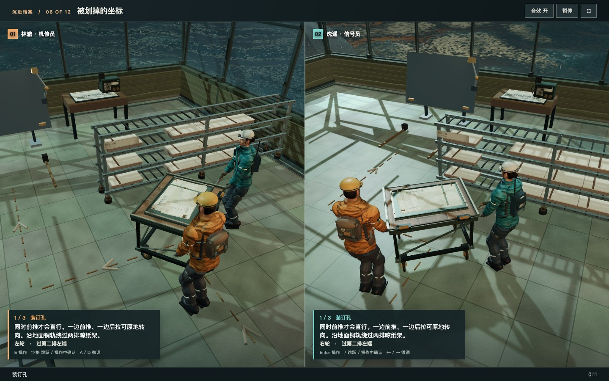
图车转到晾纸架的端头。左屏和右屏能分别看清两只车柄离架脚还有多远。
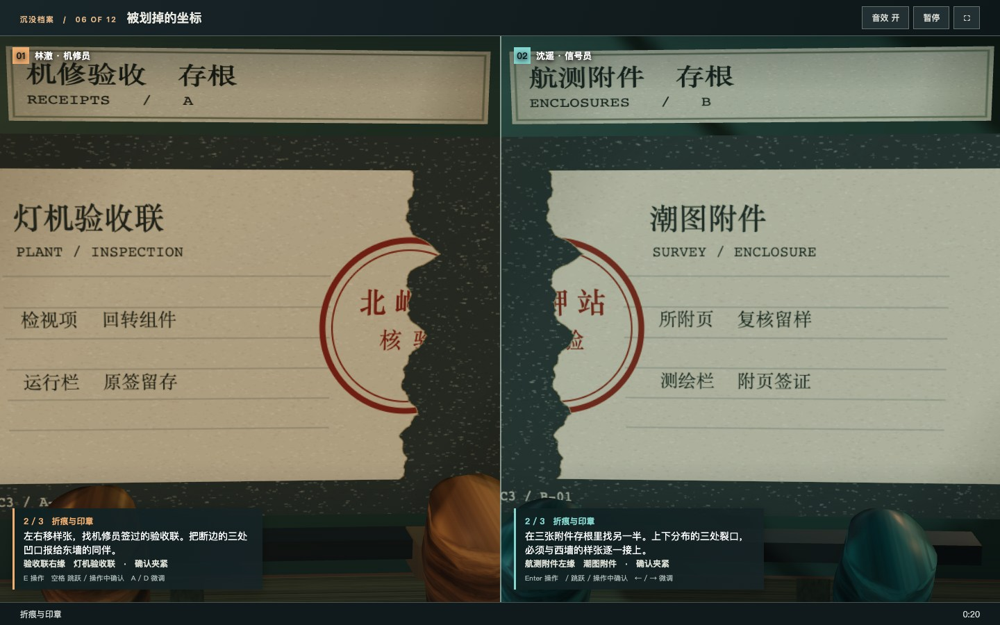
两半红章都带着北岬的名字，真正能辨认附件的是断边上三处不同深浅的裂口。
林澈摸到签名边一条浅浅的指甲印。六天前他已经看见复印件少了一行，却没叫人重印。沈遥记得替两个人按下确认的手感。电台前，她第一次能够把「我们还不知道」几个字从头说到尾。梁青复述北线待测，叫阿棠回后甲板继续看浪。第二关他站在那里只够报一盏灯，现在她要他留心自己在驾驶台看漏的任何东西。
 第六关章末实机演出。两个人终于能把自己经手的那一栏讲清楚。
第六关章末实机演出。两个人终于能把自己经手的那一栏讲清楚。
第三幕 · 逆潮而上
旧记录只给出了测量方法。今晚海水涨了多少，还得请站在浪边的人重新看一次。
07 断桥上方
塔底标尺的上端在断桥对面，下端已被浪花吞没。必须先把一个人送到桥头，把另一个人送到水边。
- 林澈 · 左屏
- 林澈坐在制动鼓前，握住操作键慢放，向前推杆快放，向后收绳。他能读出距下一个刻口还有多少度。岸上的鼓轮先停，沈遥脚底的桥还在摆。他得等她从另一头报出「咬住了」，才能继续放下一段。
- 沈遥 · 右屏
- 沈遥走到桥面的配重车旁，握住手柄左右推。她能看清桥鼻上的黄线和对岸白叉错开了多远。标记合拢时按确认插销，第一齿咬住后绳力换向，她要向另一边推。两道销都入座，她走到桥头接管棘轮。换她守制动时，林澈带潮尺走下层，收平尺身钻过横梁，再跳过缺板。
- 摆渡与换手
- 吊篮停在缺口外，座板早被风刮走。林澈握住桥头手轮，把横把移到沈遥的黄线前。沈遥从线后跳起抓把。她前后蹬腿，脚底白浪一晃而过；林澈从侧面看得更清楚，要把移动的吊点引到篮边两道白漆之间。松手早了，网绳会在身下沉一截。她可以沿网走到软梯，一格一格爬回来。沈遥先到吊篮，便接过那头的手轮。这一回轮到林澈背着尺起跳。
- 随身物与检查点
- 第一齿咬合后，桥面上失足会由安全索接回。悬网这一段另记每个已经渡过去的人。林澈在篮侧把折好的潮尺往尺架里送，沈遥向后拉开止动销。尺脚入槽，她扣上卡箍，两人这才听见卷扬机放行。
- 背风处
- 林澈把螺丝放进小时候的饼干盒，敲三个音，让沈遥把两次停顿敲回来。玩家也可以把盒子合上，或只听吊轮经过桥腹。靠岸后，两人从桌子两侧下车。林澈向后拉住寄件柜的抽屉，沈遥捏住纸夹的边缘，翻起十三年前的《北岬航测更正》。附件栏写着「附双轨值班记录」，收件人栏仍是一条空线。纸夹底下还压着一行斜字：「船尾也留一份。顾岚。」沈遥用拇指抹开旁边的水珠，把字朝里折好。
两个人在背风吊篮里坐定，沈遥把采音机搁在铁盒旁。第一声敲击之前，两人可以一同扶住桌面向前推，听第五关带出来的童年录音。放出来的两次接取保留了当时碰针、滚动和落盒的节奏。听完轮到今天的林澈敲三下，让今天的沈遥来回。两人也可以合上盒盖，专心往前去。查看双人回放的实机画面。
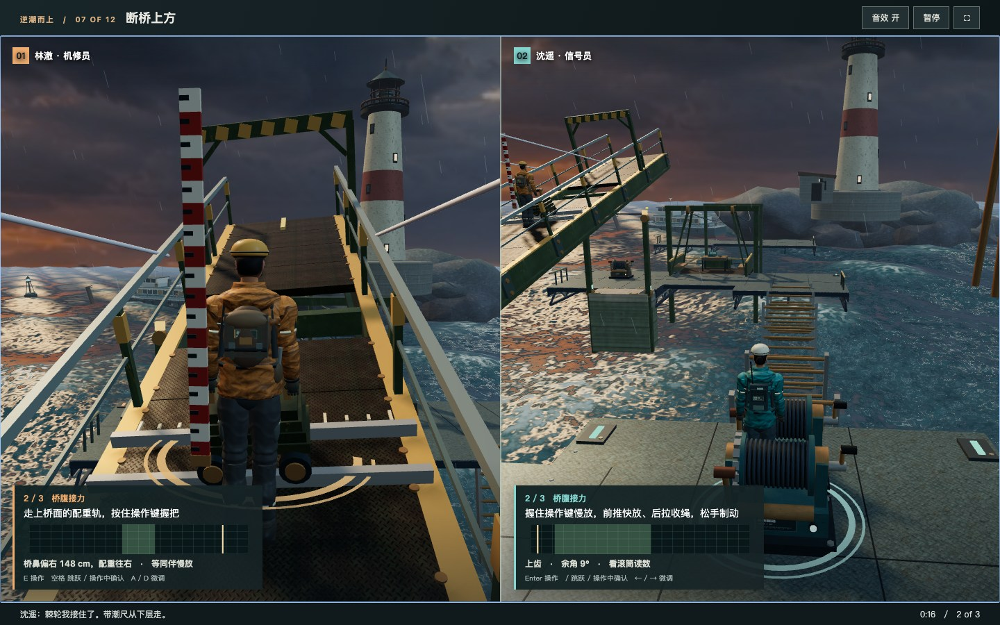
第七关实机画面。两人已经换班，林澈要把露出头顶的红白潮尺收平，才能穿过桥腹横梁。
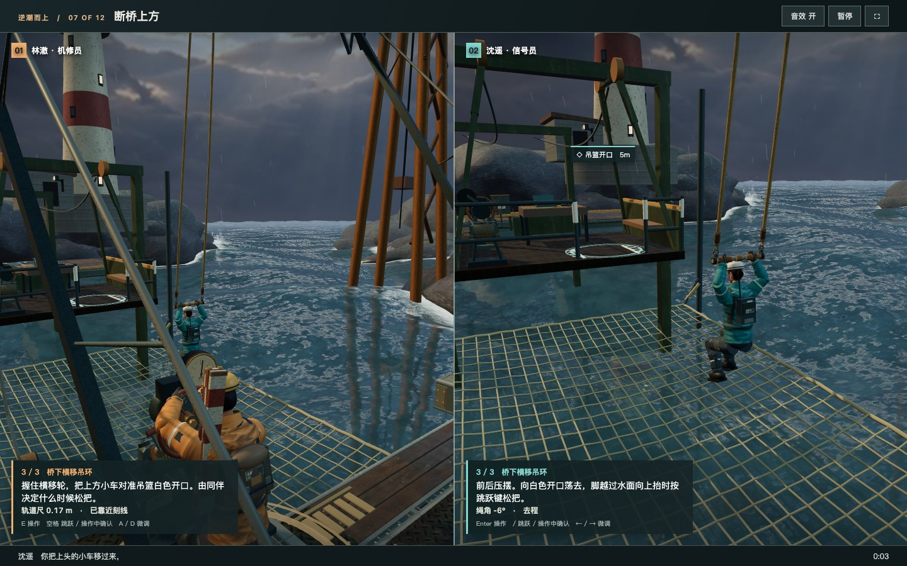
桥头的林澈能看见吊点偏了多少。到了最低处的沈遥能感觉自己还在加速，什么时候松手由她决定。
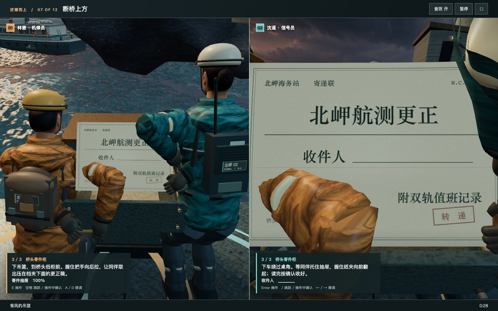
抽屉开到头，收件人栏终于从纸夹下面露出来。
沈遥刚踩进吊篮时：「我踩到底了。换我给你移吊点，把尺带过来。」
如果两个人把节奏敲对了，她会再说：「铁皮饼干盒。我那天就知道，想让你再敲一次。」
08 未寄出的报告
从断桥带回来的更正稿已经搁了十三年。中继一通，沈遥先把它摆上桌。林澈却问：「我们六天前签的那张呢？」船上四十一个人此刻还在按那张交接单做决定。
- 林澈 · 左屏
- 林澈沿外爬梯登上歇脚板，隔着一道空隙等沈遥摇来载人的踏板。沈遥握着绞盘，看得清表针进了红线；林澈踩到格栅上，才看见受了人重的踏板还会摆。他把梯座在销尖哪一侧报给沈遥。沈遥松开方向，手还压着闸。销头穿过梯座，尾端露出一圈白漆。林澈这才腾出一只手去抓梯档。桅顶夹座要求「本次交接」的原件。下面并排放着旧事故摘要、六天前的交接联与今夜值班簿，只有他先看到了夹座。
- 沈遥 · 右屏
- 表针还能越过靠梯刻度。盘过了，沈遥听林澈报偏在哪一边，把车倒回来；销尖撞住梯座就先退销，等两边都稳住再试。沈遥松开绞盘，按同伴报出的日期找到交接联，亲手带到发报台压入纸辊。林澈报出呼号，船长接通。左屏能看见驾驶台在阵风中偏离准星，右屏能看见船上最后收到的方位和纸带上真正留下的字。
- 合流与检查点
- 更正分两行发出：「林澈／只验了／灯机」「北线／没有／复测」。阵风偏转天线时，那一格会在船上留白。若刚好漏了「没有」，船长会问北线到底测过没有。沈遥能把字车移回这一格补发。已收的词、桅顶位置和第一人的署名都会保留。最后，林澈亲口为验收署名，沈遥亲口承认通航消息由她发出。船长核对两人的话，给船尾的阿棠留出频道。他第一次在两句正式回执之间插话，报出从白浪里露头的断桩。
先看右屏的表针越过红色刻度，再看左屏的销头扑空。沈遥倒车，林澈退销重推，听见锁爪落下才换手接梯。「上回我只指了一下」，他说的是六天前留在签字栏边的那道指甲印。下载这段连续实机
 第八关实机画面。上纸为岸台原稿，下纸为船上回单。瞄准驾驶台的玩家看不到这张回单。
第八关实机画面。上纸为岸台原稿，下纸为船上回单。瞄准驾驶台的玩家看不到这张回单。
梁青：「北线……复测？中间两个字，我没抄下来。」
09 潮位校验
林澈从架上抽出伸缩潮尺。第一块漂板刚好与石槛齐平，第二块却还在往下沉。他在最后一级台阶上停了一步。海雁号的主机又响了一下便停了，梁青没有催。驾驶台窗框恰好遮住了一截桩。梁青放开话筒。浪打上后甲板的声音从阿棠的手持台里涌进来；现在该他说了。
- 林澈 · 左屏
- 带上潮尺，沿八级湿石阶下到检修台，跳过随水升降的系泊漂板。把尺脚插进甲号座时，黄铜传动轴将标尺架在混凝土外侧。前后转动手轮，铜夹会沿刻度移动。听见沈遥报浪后，看这道浪从外海赶到尺边，等铜夹贴上干湿交界，亲手锁下读数。下一轮得从甲座拔尺，再跨一块漂板到乙座。
- 沈遥 · 右屏
- 沈遥先在外海瞄准镜里找到红白测桩，十字对准黄铜箍。浪谷先到她瞄着的桩，再到林澈脚下。换到朝内湾的第二架镜子后，顺序倒过来：先让林澈读，再在同一道浪的铜箍露出时应答。两次读数都从玩家锁住的尺夹位置抄下。错过浪谷只等下一道，已记入表内的一笔还在。她也可以在镜头里指出一小片浪脊或浪谷。林澈会看见同一个标记和浪一起向尺座推进，什么时候压下铜夹仍由他自己判断。
- 合流与检查点
- 林澈带着两笔记录回到图台。沈遥接通手持台，右屏换到阿棠所在的船尾：先用旧绿标认方向，再等白沫退开，看清断桩上缺掉一截的铁箍。阿棠读出手持罗经的度数，林澈把尺脚移到纸上的旧绿标，转尺画下第一道铅线。等他移尺的时候，船尾已经可以找断桩。第二笔从桩往船画。两条线在哪里相交，取决于这两个人这一次怎样瞄、怎样画。林澈用透明十字在交点上压出船位，再拿两笔水位中较低的那一笔，减去各处槽底的高程。浅槽留不出渡轮需要的 1.84 米，侧槽足够。岸上扶住图台，阿棠在船尾接着看。他要在浪谷中再次对准双环桩，才把通行水深报给驾驶台。梁青这才看清，水道有了，灯却还照在礁上。
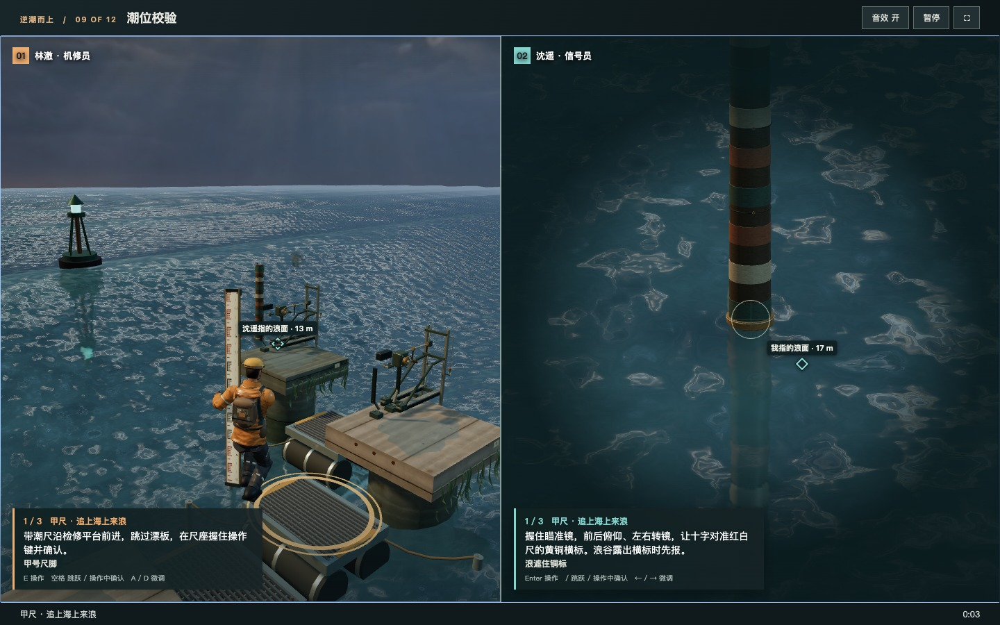
沈遥指的是尺桩边的一片浪。林澈从浮台看过去，标记正和那片水面一起靠岸。
从第九关船尾看第三关认过的旧标 · 同机位实机对照
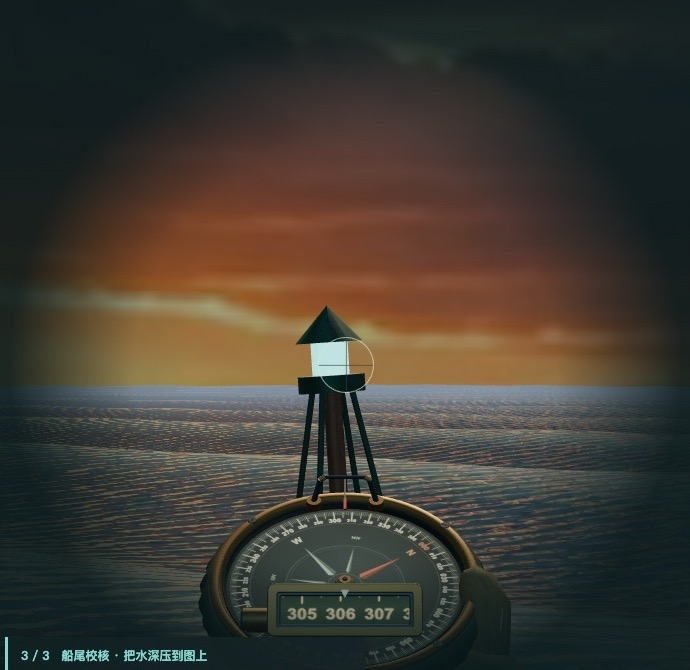
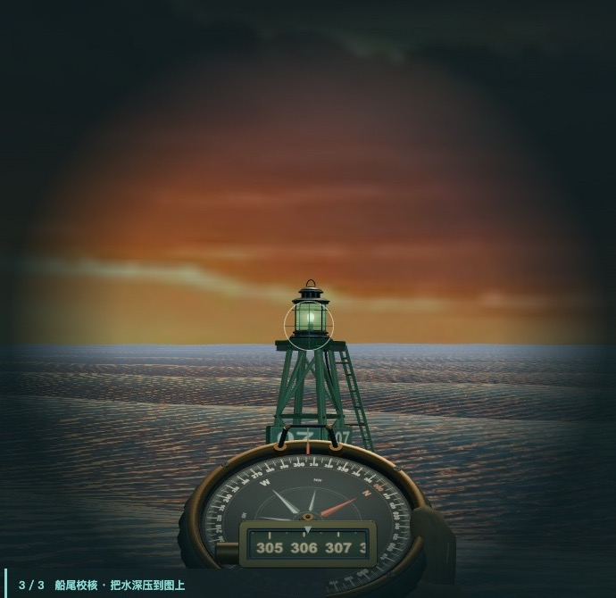
阿棠：「两道铁箍。上面那道缺了一块，我能看见里面的木头。」
第四幕 · 最后一道光
把机械角度换成船上看得见的一条光带；把电台里的命令，换成船长有权回应的一次提议。
10 裂纹透镜
沈遥把写着甲尺、乙尺的纸折了两折，塞进雨衣里兜。再抬头，灯室就在头顶。两人和门之间隔着半圈空廊，原先搭脚的白漆桥板贴在东台外面。林澈试转西台的手轮，塔身上的铁格台悄悄错过去一截。他小时候见过父亲站在上面擦灯，却从来没留意，是谁在替父亲摇轮。
林澈：「你先上去。到了背风台，把平台摇回来接我。」
沈遥抵达另一侧才看到第二架轮子。「原来这头也有轮子。林澈，可以松手了。」
西台手轮能随时转向和刹车。沈遥亲自跳过黄边，随着脚底的格栅绕塔，到Ⅱ号台再跳一次。换她在背风处掌轮，把检修台迎回林澈脚下，再送过Ⅲ号白漆标。林澈扳开东台的桥闩，折桥落座，沈遥得以走过来。两人相随爬上二十一阶塔梯。失足时，上方滑环的防坠器先刹住下落，再收索送回本侧落脚台，已经交换过的岗位有独立检查点。
灯室门内，林澈抬起弹簧图夹，沈遥展开刚才的两笔原数。她可以先试浅槽：纸能推到底，夹一松，两人却看见浅槽的净深留不出海雁所需的 1.84 米。原数可以抽回来换槽。两人把正确的一联夹在灯机旁，走到近窗的沈遥这才知道，为什么从船上会看到两条一样亮的水道。
塔外检修台 29 秒连续实机。一次失足后，两人交换手轮，走折桥、登塔。这次试航实际量得甲尺 −2.79 米、乙尺 −2.97 米，按较低的一笔计算，浅槽净深 0.81 米，侧槽净深 2.39 米。下载片段
主透镜把光裂成两束，海上会看见两条都像航道的亮线。塔顶铜架只能装下一片完好的辅镜。
- 林澈 · 左屏
- 背板挡住海面。林澈转动手轮收遮片，等沈遥报出侧光何时消失。收得太多，原本有用的主光也会发暗。换镜时他握住推杆，听她把玻璃边缘转进铜槽，才敢继续用力。镜片装进灯座以后，两人换班，轮到他从检视孔辨认远处浪尖的重影。
- 沈遥 · 右屏
- 外环有两扇检视窗。沈遥先在近窗看短程光斑，调横丝追上海面浮环的白边。侧光消失、主光仍亮时，她敲两下回铃。待林澈落销，她沿外环走到另一头查远端。推辅镜时，第一副导靴向右偏，第二副向左偏，只有两人一起扶住镜车才能通过。
- 合流与检查点
- 遮光、聚焦、定向各有近端和远端两次复核。只合上一扇窗还无法知道整条光带落在哪里。一旦松开检视镜或已报过的光斑又移开，机房的回铃就会失效。已扣住的近端刻口和通过的镜车导靴会存入当前行动检查点。最后一道窄光穿过第九关测得的侧槽后，梁青仍留船在外等雨幕过去。
 第十关实机画面。左侧行程针只告诉林澈自己转了多少。两道光究竟分开多远，要由右侧窗边的人告诉他。
第十关实机画面。左侧行程针只告诉林澈自己转了多少。两道光究竟分开多远，要由右侧窗边的人告诉他。
梁青：「现在只有一条了。别动，我想多看一眼。」
11 无光的三秒
海雁号从雨里望去，灯塔每转一圈，就消失三秒。沈遥和梁青临时约定，听到三次短响就抬头找灯。梁青先把舵柄推回中位，让阿棠留在后甲板，两个人各听一次。
- 两人先把雾号接回来
- 林澈从墙架取下方钥。沈遥握住离合柄，把甲踏板倒到岸边接他。林澈站在轮缘上，等她把铜槽盘到九十度、停稳，才压下第一道印。两块踏板转到相对时，他得跳到反向转动的乙轮，再压第二道印。两道印都咬进方口，他才够得到外侧调速机。若林澈踏空，背后的短索会在齿轮下方绷紧。钥匙挂在腰边，他的右手扶索，左手要等沈遥把黄环倒回身边。沈遥能看见离合柄旁的盘车刻度，林澈能从轮下看见最后几厘米。她抱闸，他抓住横档、屈膝翻上去，踩稳才说「你松手吧」。若先松开操作键再按跳跃，或两人一时都没接着操作，卷索会把他送回上次压过印的踏板。第一次压印前，卷索送他回取钥处。
- 第一圈 · 岸上与船上
- 林澈看固定指针，在入暗前送预备灯。沈遥等铜触点亮起，把气阀向前压，再松回中位截断号声。发完第三响，她还要松开电台操作键，才能听到海雁号。阿棠报了三声。轮到梁青，只有第一声和最后一声。她听着第一声的尾音等它落下，中间最紧的那一响已经过去了。
- 第二圈 · 请她再听一次
- 纸带上有三行针迹。沈遥拿手指沿着驾驶台那一行走，在该有第二个尖峰的地方停住。林澈把第二齿送进检修窗，让沈遥松开定时柱，沿尺拉长间隔；然后换第三齿。两人逐齿锁紧，再回到原位重发。岸上只记录阀杆；船尾和驾驶台各有自己的复位时间。拉得还不够远，梁青会如实报出听到的数目，两人可以拿着新纸带再改。
- 第三圈 · 船长抬头
- 风载开始拖慢飞锤，林澈左右修正，让预备灯按时出现。梁青听清后，右屏切入驾驶台。瞄环随船摇摆，雨落在玻璃上。沈遥在右屏沿梁青的视线找到重新露出的灯室，左屏一直有人稳住转速。梁青认出灯，同时也看见船首还在断桩外。她要等阿棠确认船尾的位置，才会转舵。
第十一关实机分屏，13 秒。林澈踏空，沈遥从离合台把乙轮倒回他手边。听到「我站稳了」，她才继续盘车，让他给钥匙压第二道印。
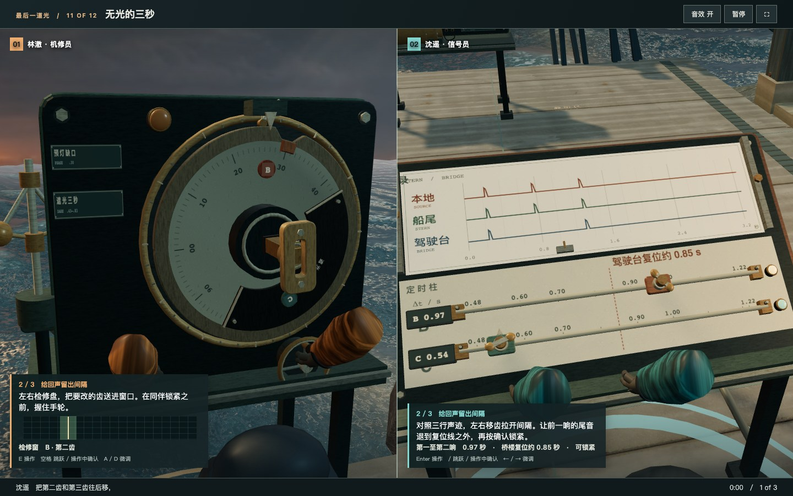
沈遥看到驾驶台少了一道针迹。林澈得把相应的齿转进检修窗，她才能改动下一圈的间隔。
梁青：「先空转一圈。舵在我手上，这一轮我不会转。」
12 航道重现
雨幕裂开一道缝。林澈先认出第九关那根断桩。沈遥面前的监视器里，它却像被锯成了两截，桩顶偏在桩身右边。她把手按在测距鼓上，让林澈先别追船。外礁的两个镜头隔着一根横梁，同一条木边接直时，她才能落笔。
- 林澈 · 左屏
- 林澈握住外礁镜的转向器，先报断桩上箍缺口旁的木边，再报驾驶台靠船首的那扇窗。船身随浪一抬，窗框就可能出了沈遥的接片线。林澈得把那一条边带回来，等她抄完再松手。听到沈遥从第二行读出的灯轴方位，他才转动手轮，把光交到船首。岸上的光束和海面的反光跟着同一根轴走；沈遥听见「桩出来了」时，他仍得把光留在船前。最后轮到阿棠报告船尾已经进湾，他才敢把手轮转回原刻口，亲手锁住。
- 沈遥 · 右屏
- 接片台的上半幅来自左镜，下半幅来自右镜。沈遥转鼓，调整右镜的会聚距离。断桩和前窗各占抄数联上的一行，按键时的实测距离与方位会留在纸上。她把拨片移到前窗那行，根据实测位置换算灯轴，亲眼看见船首入光才送出。断桩那行也有用，提醒两人哪一边要留在暗里。正式发号沿用雾号演练时锁好的第二齿和第三齿。她在三次触点经过时各压下一次气阀，再听驾驶台复述。最后一道引导发完，沈遥松开发话键。右屏转到阿棠刚推开的舱门。右侧玩家走到艉栏，手套扣上横管，沿栏挪半步，把近、远两处白漆排成一条线。再向外看，第九关那根上箍缺了一截的木桩就在船舷旁。此时可向船长报「还贴着船身」。浪头盖住下箍时，阿棠得再看一眼；两道箍都过了艉栏，他才有把握举起手台报「已过」。岸台若在这时按住发话键，松开后得重新听全这句报告。
- 合流与结局
- 船还贴着断桩时，阿棠会让梁青等。两道箍越过船尾、岸上的窄光仍然对准船首，梁青才决定用掉应急推进。她说完「现在我转」，林澈脚下那圈刻度还在走。他要跟着船首往湾里转。窄光移开时，梁青守住舵向，让船凭惯性滑行；光回来，她才继续把船带过岬角。从断桩旁看，船首已经转过去，白浪还停在船刚走过的弯上。阿棠从栏上抬起头，左右舷各有一根黄顶界桩。转弯时，右边那根从视野里横着掠过了一次。船还斜着，这一眼报早了。等船转直，他再靠上艉栏，看界桩越过近处的栏角；核完一舷，还得亲自回头看另一舷。最后一舷也过界，他才有把握说：「船尾进背风水了。救援艇在右舷。」林澈听全这句话才回轮、落锁。右舷的救援艇抛来缆绳，岸与船的画面沿着它合到一起。四十一人，全员到齐。每一舷已经核过的结果都会保存。
外礁合像测距。看右屏中央那条水平接缝：沈遥第一次压抄数键时，木桩还错开一截；第二次压下去，铅笔才落到第一行。等前窗也记好，她把这一行的方位交给守灯的林澈。下载实机片段
留意右屏的横栏。阿棠先看到桩还在船舷旁，第一次举起手台让船长等；第二次举起手台时，两道铁箍已经出现在栏线另一侧。左屏的林澈一直守着船首。下载断桩报位片段
从梁青决定转舵开始，看右屏的黄顶界桩和贴近镜头的艉栏。阿棠第一次报早了；等船转直，他核过右舷，再转身看左舷。左屏须一路把光留在船首。下载双人入湾实机
梁青：「北岬，我看见了。」短暂静默。「现在我转。」
尾声 · 收件人
天亮后，拆灯机的卡车到了。林澈照常给交接单签名，却在签名下面写明「只验灯机」。沈遥把航测结果另起一页，把值班录音的两轨都附上。两人一起将旧报告和昨晚的修订发给港口、渡轮与事故家属。回执一张张吐出来。没有人当场宣布十三年前的事已经解决。
林澈：「我爸留的那份，收件人一栏是空的。」
沈遥把最后一张回执折好：「这份有人收。」
阿棠的电台响了十秒。先是绳子绷紧，接着杯盖落地，有人笑。阿棠在海雁号上录了返航后第一段声音，问岸上的两个人猜不猜得出。林澈打开一只空铁盒，把带子放进去。沈遥在盒盖上写下「北岬，第二盘」。早班船靠岸，两个杯子一起从值班台上拿走。
临近中午，港口转来一封语音回件。说话的是当年邮运船上的顾岚，她在桥头那张纸边留过字。船搁浅那晚，她从后甲板看得见灯；船头怎么转，她站的地方恰好看不见。她在「看得见」后面停了片刻，又把自己看不见的也说了出来。
顾岚：「劳驾，把这句话也夹进去。」
玩家可从通关结算或第四幕档案打开这封回件。左屏在三栏之间移动顾岚的签页，把夹子扣在她当晚所站的位置；右屏展开原话，亲手附入。签页归在「后甲板」，印章落下。这份附页下次打开还在原处。
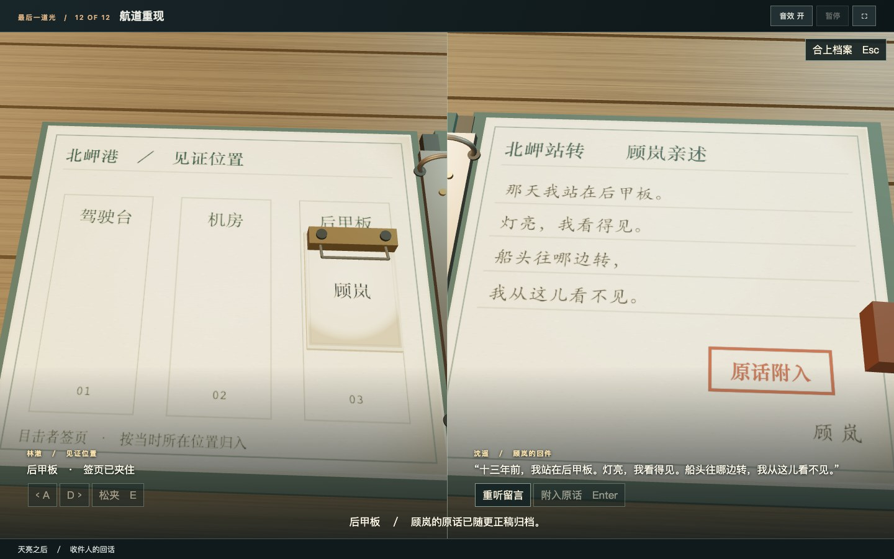
通关后的值班台。顾岚的签页与她的回话各占半屏。阅读留言全文
顾岚：「我叫顾岚。表我收到了。十三年前，我站在后甲板。灯亮，我看得见。船头往哪边转，我从这儿看不见。劳驾，把这句话也夹进去。」
分屏、难度与制作边界
演出与规模。按一座灯塔、四组可复用场景设计。复用同一座吊桥的上层、桥腹和水线，让前一幕经过的地方成为后方参照。每关约 5–9 分钟，加上四幕演出，首通目标约 80–110 分钟。风暴推进由触发事件驱动，玩家停下听完一段录音不会害死船上的人。
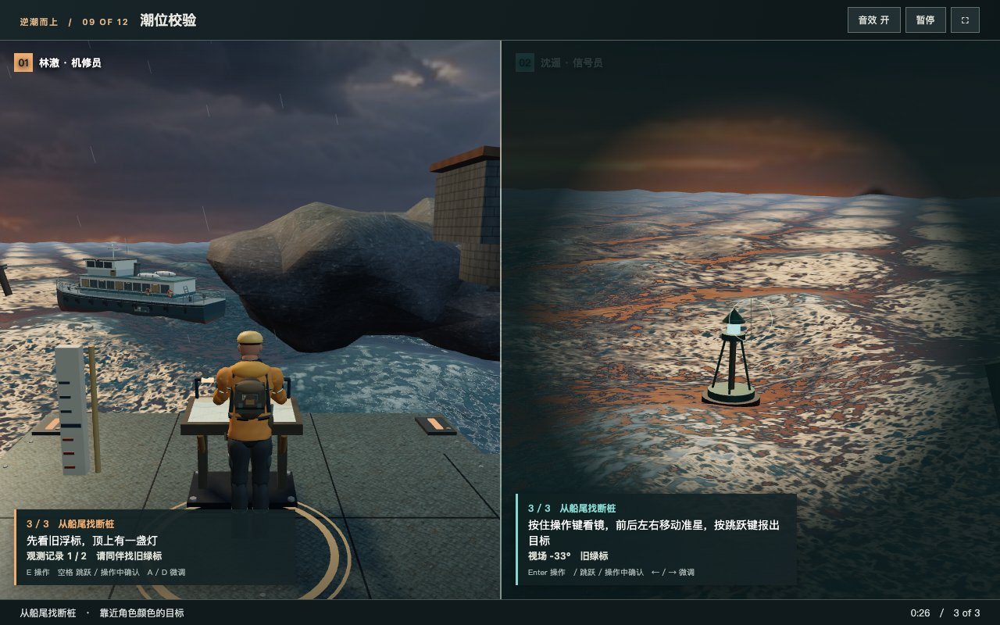
第九关实机画面。左屏拿着海图线索，右屏可以转动远望镜寻找旧绿标与断桩。
画面取舍。写实细节集中在两人会停下来看的地方，例如右屏能读出受潮纸带上的三道针迹，左屏能看出铜齿还差多少才进检修窗。Three.js 在同一座海岬上渲染两台相机，近景使用扫描材质，海面按风浪动态反射灯光。本文配图均为浏览器实机抓帧。照片级画质和原作同档的双人挑战仍是制作目标。
一人一扇窗。进关后点右上角「双窗口」，沈遥的视角会在新窗口打开。可以把它拖到第二块显示器，各自在自己的窗口全屏、转镜头或右击指出实物。暂停、潮水、无线电和关卡进度由两人共享。关掉副窗或点「合回同屏」，两个人会回到同一画面继续当前这一刻。
同一局靠泊。林澈从艇首看得见水面上的礁石；沈遥坐在艇尾，能看见他的人和整段登岸距离。点任一画面可查看该窗口原图。
视野与输入。两人各用独立第三人称镜头。行走时轻点跳跃可以小跳，按住可以跳得更高。林澈用 Q、R 转头，C 回正；沈遥用逗号、句号转头，反斜杠回正。行动简报里轻推摇杆，对应角色的名字会亮起。一只手柄可以交给任意一人，另一人用键盘；中途可暂停互换。使用手柄时各自用右摇杆控镜，按下右摇杆回到人物身后。隔着浪沟报不清落脚点时，可按住 F（林澈）或分号（沈遥），用方向选中木板、手轮或船上的实物，再松开。在两块画面里都能看见同一个位置，它会跟着浮台一起走。两人隔着塔身时，收到指示的一方可站稳，按住 G（林澈）、单引号（沈遥）或手柄 RB，转头看同伴指的实物。石墙挡住视线时，标记会说「视线被挡住了」。露出墙角、在自己画面里看清了，指路的人才会收到「已看见」和来自另一侧的提示音。松手回到原视角，移动、跳跃或操作器械会立即接回行动镜头。手柄使用 LB，也可以用鼠标在任一半屏右击。靠近器械后，只有操作者的镜头靠近仪表，另一位继续在场内活动。泵台、透镜、无线电各有声音和形状反馈。默认允许看伙伴的半屏，寻找信息的人仍须把自己的发现转成另一方能执行的动作。
十二秒连续实机。林澈指着检修台格栅，沈遥转头看清。林澈摇回平台，沈遥松开视角键，跳上平台，到背风台接手另一架手轮。下载片段
挑战曲线。第一幕教空间协作和回话；第二幕放慢动作，把难点转到听辨和证据对位；第三幕要求边移动边交换角色；第四幕让光、声、位置按顺序合流。第 6 关刻意去掉时限，第 11 关先提供安全排练。每次失误指明缺的是哪一次动作，最后一段重试不超过约 30 秒。以上为设计目标，难度需经真人双人试玩校准。
验收方式。两组玩家交换角色，分别测试熟悉平台跳跃和初次玩双人游戏的组合。重点记录第 3 关结束时能否复述船长误解了什么，第 7 关两边是否都经历过主动接人的时刻，第 12 关两人是否自然松手等船长回话。若一名玩家可以长时间离开，或连续两次失败仍说不出同伴看见了什么，就调整关卡反馈。
交通艇上擦读铜牌、复述频道和岸船初次接听的七段对白、沈遥用船钩收尾缆时的四句近场回话、第一关护舷井的交谈、抓沿时隔墙的两声问答与值班间的渡轮呼叫、第二关链渡上的四句对话及岸台和海雁号的首轮双向通话、第三关接离合时的五句近场对白及试光前后五句岸船发话与回执、第四关泵房里的八段近场对白、第五关八句档案对白、夏日记忆中五句跨越童年与成年的交谈、试船池里的六句童年对白和章末四句岸船通话、第六关图室里的对话与章末四段岸船回话、第七关荡渡、铁盒与寄件柜的八段对白、第八关踏板上的两段近场对白、呼号、分词报文和具名更正，第九关岸上报浪与船尾辨桩，第十关绕塔检修台的五句交谈、第十一关轮坑接应的四句近场对白、雾号演练与驾驶台回话，以及第十二关船尾报位、船长决定、船尾入湾的通话和顾岚在尾声留下的语音回件使用 hexgrad 的 Kokoro-82M v1.0 预设声线离线合成。手链棘轮、船台松键声、铁盒、继电器、马达、绞盘刹瓦、梯座插销、水尺、柜闩、气动雾号、救生索棘爪与黄环的撞击声、磁带底噪均为本作原创。
试船池庭院使用 Dimitrios Savva 的砖地实拍、Rob Tuytel 的砂岩纹理，以及 Greg Zaal 拍摄、Jarod Guest 处理的晴空全景，三者采用 CC0 许可。船身、遥控器、号码旗、瓶盖、赛道与池水为本作制作。Brick Villa Floor · Sandstone Cracks · Kloofendal 48d Partly Cloudy
护舷井的堤端护石、压顶和系艇环按关卡的攀爬尺寸建模。石材与包铁面叠加了潮痕、锈流、掌印和磨损，表面采样取自 Poly Haven 的 CC0 素材。Sandstone Cracks · Concrete Floor 01 · Green Metal Rust
堤脚的潮间带岩石使用 Poly Haven 的 CC0 实景扫描。Rob Tuytel 制作了 Coast Rocks 05，另一组 Coast Land Rocks 03 由 Rob Tuytel 与 Rico Cilliers 制作。模型、贴图与处理记录。第十关灯塔上段的石面使用 Charlotte Baglioni 制作的 CC0 扫描 Old Stone Wall 02，砌体、挑石和窗洞按塔身重新建模。
林澈与沈遥的成年和童年肖像、雨衣图像，以及夏日窗外的海景底图为本作原创生成素材。面部网格改编自 MediaPipe 标准脸模，随包附许可文本。衣料织纹使用 colormass 摄影、Rico Cilliers 处理的 Stretch Poplin。
码头与泵井使用 Dimitrios Savva 的 CC0 扫描材质。Poly Haven · Concrete Slab Wall
第三关机房外的露天踏面采用 Rob Tuytel 拍摄的 Concrete Floor 01（CC0）。石料颜色、法线、粗糙度和高度来自同一组实物贴图；雨水沿低处聚集，踏面上的鞋印来自本次行走。Poly Haven · Concrete Floor 01
栈桥木枋使用 Dimitrios Savva 拍摄、Dario Barresi 处理的 CC0 实物扫描。Poly Haven · Weathered Planks
第九关和第十二关出现同一根断桩。木身使用 Rob Tuytel 的实物摄影材质；上箍断口、铆钉和劈裂的冠顶均按两关所需视线建模。Poly Haven · Rough Wood（CC0）
断桥钢构和防滑板采用 Rob Tuytel 的实物扫描材质。Green Metal Rust · Metal Plate（CC0）。